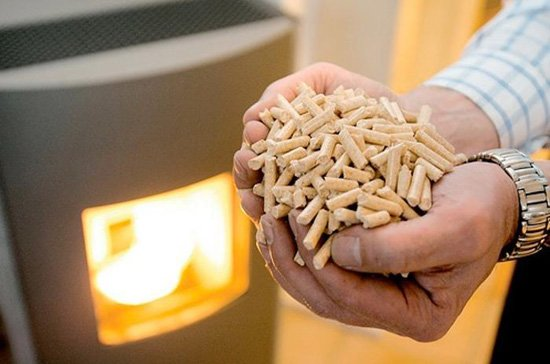

Ярослав Чемеринський
Директор
Моб. тел.: +38 067 674 24 99
Роб. тел.: + 38 032 295 84 62
Email: yarislav.chemerynskiyi@denobs.com.ua
79014 м. Львів
вул. Мучна 23, офіс 4
Email: office@denova.сom.ua
Website: denovs.com.ua
За прогнозами світової енергетичної ради до 2030 року загальносвітове споживання енергії зросте щонайменше вдвічі, а структура споживання енергоресурсів зазнає значних змін. А основна ставка буде робитися на інтенсивне використання відновлюваних джерел енергії (сонячне випромінювання, біомаса, вітер, ріки та припливи, геотермальне тепло). Отже, розширення видобутку енергоресурсів не можливе, а проблема задоволення попиту даних видів енергії постійно зростає.
Різні галузі економіки і виробництва характеризуються різноманітними потребами в паливно-енергетичних ресурсах, що визначаються, з одного боку, технологічними особливостями окремих виробничих процесів, а з іншого – роллю, яку вони відіграють у життєзабезпеченні населення, екологічною та виробничою безпекою. Ми розглянемо галузь, що сьогодні стрімко розвивається - сільське господарство.
В сучасних ринкових умовах енергомісткість продуктів аграрного сектору та її економія виступає, як фактор конкурентоспроможності виробництва, а також реалізації продукції.
Для зменшення енергоємності сільськогосподарської продукції і енергозабезпечення виробництва енергією і паливом необхідно:
-впроваджувати енергозберігаючі технології та технічні засоби енергозабезпечення;
-налагодити облік витрат енергії й палива;
-автоматизувати режими роботи енергоємних систем, технологій і установок виробництва тепла;
-використовувати відновлювальні джерела енергії (біомасу, енергію сонця і вітру тощо)
Оптимізація використання енергоресурсів на підприємстві підвищує дохід підприємства, особливо при зростанні цін на енергоносії; збільшення продуктивності через удосконалення виробничих процесів, що пов’язані зі способом використання енергії; скорочення викидів у навколишнє середовище, через що покращується екологічний стан підприємства.
Як зазначає заступник директора по виробництву компанії «Денова» - Ярослав Чемеринський, економію енергії в сільському господарстві можна здійснювати наступними шляхами: Виробництва і використання біогазу із відходів сільського господарства (особливо під час очистки стічних вод); Використання тепла сонячної енергії, вітру та тепла термальних підземних вод; Спалювання в парових котлах та сушарках нетрадиційного палива, біогазу, відходів сільського господарства, мазутно-водної емульсії та ін.; Впровадження комбінованих когенераційних енергетичних систем у комплексі із системами акумуляції енергії; Створення мережі підприємств з переробки побутового сміття з метою його утилізації, переробки твердих побутових відходів та отримання теплової чи електричної енергії; Розширення сфери і збільшення обсягів використання сонячної енергії та енергії геотермальних джерел для вироблення електроенергії та забезпечення теплопостачання. Як прогнозує світовий енергетичний комітет , до 2020 року у розвинених країнах 75% тепла для опалення та гарячого водопостачання буде поступати від теплових насосів (витрачаючи 1 кВт електричної потужності можна отримати 3-4 кВт (а іноді й до 5-6 кВт) теплової потужності).

Однією з найболючіших проблем вітчизняної енергетики є нерівномірність споживання електричної енергії протягом доби, у робочі та вихідні дні тижня, у різні сезони року. Багато підприємств безперервного циклу (птахофабрики, свинарські ферми тощо), перерва в електропостачанні яких навіть на короткий час недопустима, необхідно оснащувати резервними джерелами енергії, наприклад, пересувними електростанціями невеликої потужності. Пересувна електростанція — це автономне джерело електропостачання, здатне працювати як паралельно з електромережею, так і самостійно, та бувають малої (до 10 кВт), середньої (від 10 до 100 кВт) та великої (від 100 кВт) потужності. Окрім комплексного впровадження енергозберігаючих технологій можливе також і поетапне переоснащення технологічних систем. Враховуючи світову тенденцію до подорожчання енергоносіїв, частка поточних витрат на всі види енергії з року в рік суттєво зростає, а одноразових витрат, навпаки, зменшується. У кінцевому підсумку результати аналізу і розрахунків дозволяють кількісно оцінити вплив факторів енергообмеження і підвищення енергоефективності в аграрному секторі. Всі вищезазначені технології успішно застосовуються спеціалістами «Денови» на об’єктах аграрного сектору. За більш детальною інформацією, звертайтесь за контактами, що вказані на сайті.
Контактна інформація:
Телефон: +123456789
Email: info@example.com